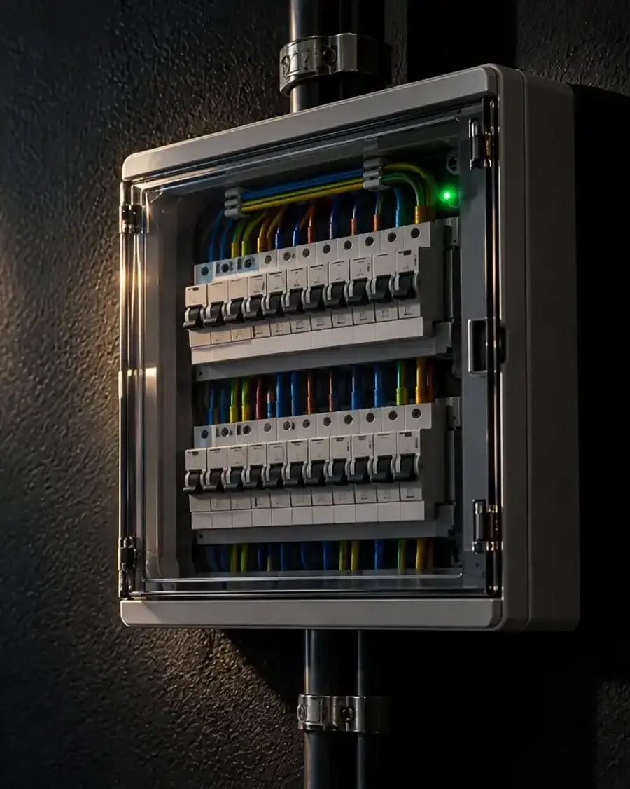
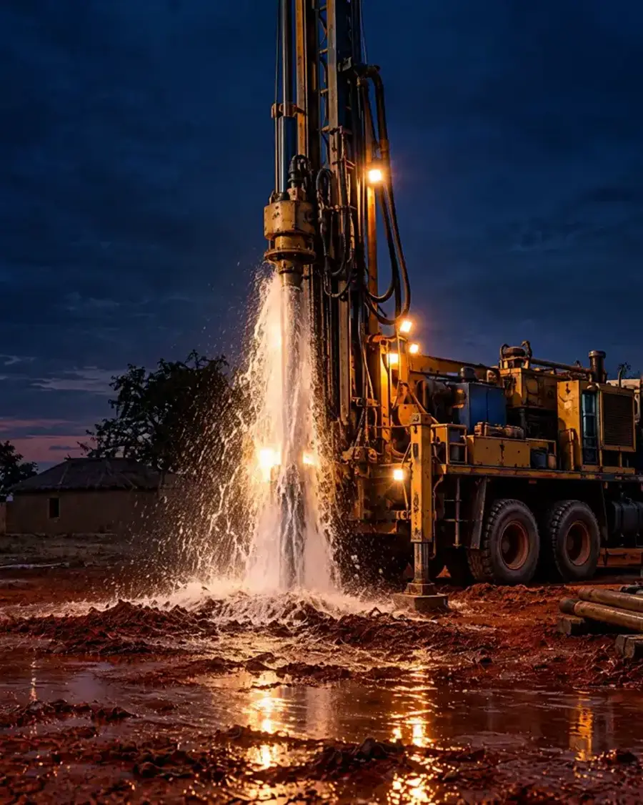

Plomberie, électricité et forage à Lomé
L’eau et le courant,sans mauvaise surprise.
BATITECH dépanne, installe et entretient vos réseaux d’eau et d’électricité, et réalise vos forages de puits.
Le problème
Une fuite, un court-circuit,une pompe qui lâche ?
On se déplace, on coupe ce qu’il faut couper et on trouve l’origine de la panne avant de toucher à quoi que ce soit.
La réparation
Réparé avec du matérielqui tient dans le temps.
Raccords, joints, vannes, câbles, disjoncteurs : la pièce usée est remplacée, pas bricolée.
Le résultat
Propre, sec,et contrôlé.
On remet en eau ou sous tension devant vous et on vérifie que tout fonctionne avant de partir.
Nos métiers
Trois métiers,une seule équipe.
L’eau qui arrive, l’eau qui s’évacue, le courant qui alimente la pompe : chez vous, tout est lié. Un seul interlocuteur s’occupe de l’ensemble.
Plomberiefuites, sanitaires, salles de bains
- Recherche et réparation de fuites
- Débouchage et évacuations
- Salles de bains complètes

Électricitéinstallation, dépannage, tableaux
- Installation neuve et rénovation
- Tableaux et disjoncteurs
- Pannes et courts-circuits

Foragepuits, pompes, réservoirs
- Étude du terrain et foration
- Pompe immergée ou solaire
- Château d’eau et raccordement
Comment on travaille
Du premier appelà la remise en service.
Vous savez à chaque étape ce qui va être fait, combien ça coûte et quand on intervient.
Vous nous contactez
Par téléphone ou WhatsApp. Une photo du problème nous aide à préparer le bon matériel.
Diagnostic et devis
On passe voir, on identifie la cause et on vous remet un devis détaillé avant tout travail.
Intervention
On travaille proprement, on protège les lieux et on remplace ce qui doit l’être.
Contrôle et conseils
Essai devant vous, explications, et conseils pour éviter que la panne revienne.
Zone d’intervention
Basés à Amadahomé,au service du Grand Lomé.
Vous êtes plus loin ? Appelez-nous : pour un forage ou un gros chantier, on se déplace au-delà de Lomé sur devis.
- Amadahomé
- Agoè
- Adidogomé
- Avédji
- Totsi
- Tokoin
- Bè
- Hédzranawoé
- Djidjolé
- Baguida
- Kégué
- Légbassito
- Sanguéra
- Zanguéra
Une fuite, une panne,un projet de forage ?
Appelez ou écrivez sur WhatsApp. On vous répond, on se déplace, on vous fait un devis clair avant de commencer.